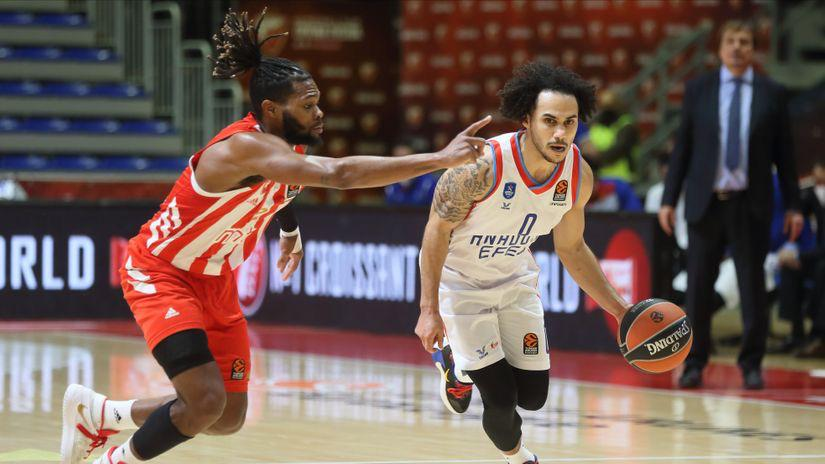

Crvena Zvezda-Efes
By Andjela 01/26/21 6 comments
Košarkaši Crvene zvezde poraženi su u 22. kolu Evrolige od Efesa - 86:72.Da je napadački jedna od najboljih ekipa na "starom kontinentu", Efes je pokazao baš protiv Crvene zvezde, pošto je sve dileme oko pitanja pobednika, rešio već u prvoj, a potvrdio u drugoj četvrtini. Domaći igrači su leteli po terenu, pogađali za dva, odlično šutirali za tri poena, dok crveno-beli nisu imali pravi odgovor na brzu igru u odbrani, a u napadu su se ređale greške.

Lids protiv Njukasla
By Marija 01/25/21 3 comments
Kada se pogleda skor između Njukasla i Lidsa, navijači „Svraka“ imaju razlog za smešak, oni su do meča u decembru kada su primili pet golova posle jedne kontrovezne odluke Marka Klatenburga u ovom veku samo jednom izgubili od rivala sa severa.

Tomas Tuhel zvanično postao trener Čelsija
By Andrea 01/23/21 5 comments
Tuhel stiže na "Stamford Bridž" samo nekoliko nedelja posle otkaza koji je dobio u Pari Sen Žermenu, a navijači Čelsija verovatno i nemaju pojma da će im na klupu sesti dobar trener, ali i jedan od najpopularnijih nemačkih manekena.

Tošić ipak ne prelazi u Zvezdu
By Sanja 01/21/21 4 comments
Duško Tošić je bio želja Crvene zvezde, čak su stizale informacije da su i pregovori u toku, ali je srpski defanzivac odlučio ponovo da pojača redove turskog kluba, a u pitanju Kasimpaša.Iskusni štoper postigao je dogovor sa turskom Kašimpašom i do kraja sezone će nastupati za ovaj klub iz Istanbula.
Srpski napadač je i dalje tema broj jedan u Nemačkoj!
By Stefana 01/16/21 6 comments
Otkako je Luka Jović rešio da se vrati u Ajntraht iz Frankfurta na pozajmicu i tako završi prvu epizodu u Real Madridu - srpski napadač je u centru pažnje nemačke javnosti. Tri pogotka na dva meča u Bundesligi na kojima je igrao tek po 30 minuta bila su mu dovoljna da ponovo zaludi Frankfurt i pokaže Madriđanima da i te kako ima šta da pokaže.
Novak Đoković će posle dve nedelje u karantinu u Adelejdu igrati na egzibiciji "A Day at the Drive", 29. i 30. januara.
By Anđela 01/10/21 10 comments
Biće to prilika za najboljeg svetskog tenisera da posle izolacije proveri u kakvoj je formi uoči početka odbrane trofeja na ATP kupu i Australijan openu. Organizatori egzibicije su objavili raspored mečeva i Novak će imati čast da je otvori u meču sa velikom nadom italijanskog i svetskog tenisa, Janikom Sinerom.